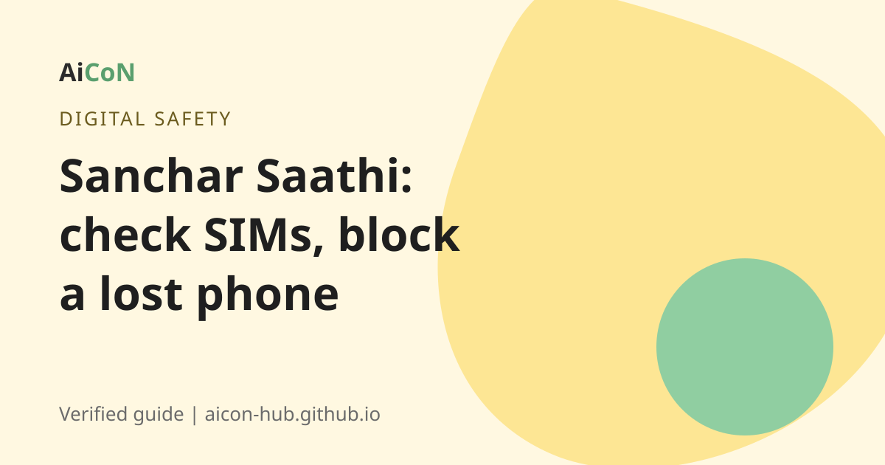

Sanchar Saathi: check SIMs in your name and block a lost phone
Someone may have taken a SIM using your ID. Sanchar Saathi is the Department of Telecommunications portal that lets you check this for free. You can also block a lost phone and report fraud calls.

What is Sanchar Saathi?
Sanchar Saathi is a citizen service of the Department of Telecommunications (DoT), Ministry of Communications. It is a website, sancharsaathi.gov.in, and also a mobile app. Its aim is to protect mobile users from misuse of SIMs and phones.
What can you do there?
- Know mobile connections in your name. See how many SIMs are registered on your ID. Report any you did not take or do not need. This is the TAFCOP service.
- Block a lost or stolen phone. This is CEIR. The phone is blocked on all Indian networks. If someone tries to use it, it can be traced. If you find the phone, you can unblock it.
- Check if your phone is genuine. Use the IMEI number.
- Chakshu. Report suspected fraud calls, SMS or WhatsApp messages, and spam.
- Report international calls that show an Indian number.
- Trusted contact details. Check if a customer care number or website of a bank is genuine (marked Beta).
- Know your wireline internet provider.
The portal homepage shows big numbers: 51.44 lakh mobiles blocked and 32.03 lakh traced. For "know connections in your name" it shows 360.69 lakh requests received and 340.05 lakh resolved.
How to check SIMs in your name, step by step
- Open sancharsaathi.gov.in or the Sanchar Saathi app.
- Choose "Know mobile connections in your name".
- Log in with your mobile number and the OTP.
- You will see the numbers registered on your ID.
- For a number that is not yours, or that you no longer need, use the report option.
According to DoT guidelines reported in the media, one person can have up to nine mobile connections in their name. Check the portal for the current rule.
How to block a lost phone, step by step
- First, get your phone's IMEI number. It is on the phone box or bill. You can often see it by dialling *#06# on a working phone.
- Open the CEIR service on Sanchar Saathi.
- Choose "Block lost/stolen mobile".
- Fill in the details of the phone, the loss and your contact number.
- Submit. Save the request ID.
- Use the request ID to check status later.
Also file a police complaint. Many forms ask for the complaint number.
The law on SIM fraud
An earlier AiCoN post said the Telecommunications Act, 2023 punishes getting SIMs by fraud, cheating or personation. The post quoted Section 42(3)(e), with up to 3 years in prison and a fine up to Rs 50 lakh, or both. The India Code page for the Act is live and has a "Section 42. General provisions relating to offences" entry. For this article we did not re-read the full sub-section text, so check the section on India Code before you quote the exact penalty.
The simple lesson is clear. Never give your ID or photo to a stranger to get a SIM for them.
Cost, eligibility and limits
| Price | Free. |
|---|---|
| Who can use it | Any mobile user in India. |
| Needed | A working mobile number for OTP. For a lost phone, the IMEI number. |
| Limits | Chakshu is not for reporting money lost in fraud. For that, call 1930 or use cybercrime.gov.in. |
Stay safe
- Use only sancharsaathi.gov.in. Look for the gov.in ending.
- Do not pay anyone to "unblock" or "check" SIMs.
- If you lost money to online fraud, call 1930 at once.
Frequently asked questions
Is Sanchar Saathi free?
Yes. All services are free.
How do I know if someone used my ID for a SIM?
Use "Know mobile connections in your name" and look at the list.
Will blocking my lost phone block the SIM too?
CEIR blocks the phone handset (IMEI). Ask your mobile company to block the SIM separately.
Can I unblock a phone I found?
Yes. The portal says a blocked phone can be unblocked on the app or portal.
Does it work from Kerala?
Yes. It is for all of India.
Sources: Sanchar Saathi, Know mobile connections in your name (TAFCOP), CEIR user manual, Telecommunications Act, 2023 on India Code. Checked 6 October 2026.